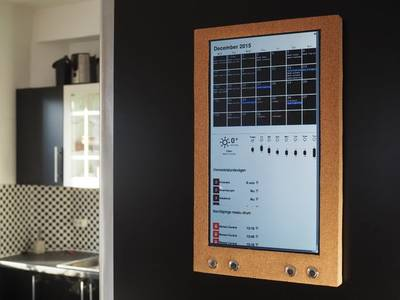
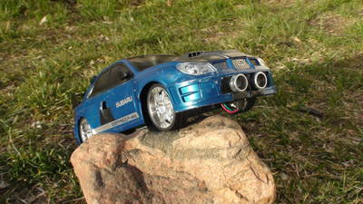
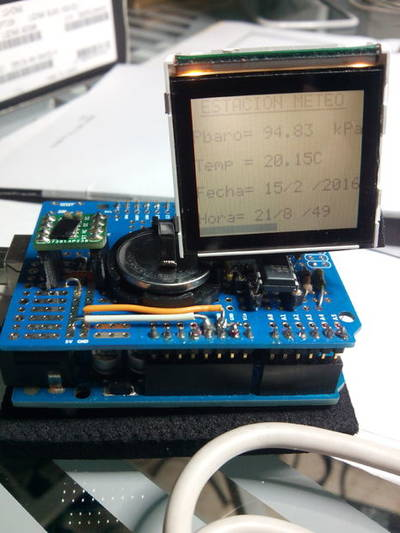
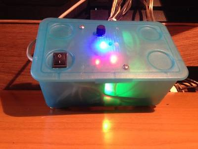

2016-04-28 - Nº 52

Editorial
Aqui está a Newsletter Nº 52 no seu formato habitual. Agora às quintas-feiras. Se gostar da Newsletter partilhe-a!
Todas as Newsletters encontram-se indexadas no link.
Esta Newsletter tem os seguintes tópicos:
Esta semana ficámos a conhecer um computador que usa a energia que está presente no ar para se alimentar. A fundação Raspberry PI anunciou uma nova Câmara de 8 Megapixeis para o Raspberry PI - esta usa sensores da Sony. Ficámos igualmente a saber que a Cypress vai comprar a divisão de IoT da Broadcom.
Na Newsletter desta semana apresentamos diversos projetos de maker. Na rubrica "Documentação" apresentamos seis livros (eBooks) que podem ser descarregados livremente e que esta semana são sobre Transformadores e Circuitos electrónicos, introdução às tecnologias de rede, Algoritmos, programação extreme com Perl, iniciação à programação com Object Pascal e um livro sobre as culturas abertas e livres e sobre a forma como a propriedade intelectual está a ser usada para restringir estas liberdades. Foi também publicada a revista MagPI número 45.
 João Alves ([email protected])
João Alves ([email protected])
O conteúdo da Newsletter encontra-se sob a licença  Creative Commons Attribution-NonCommercial-ShareAlike 4.0 International License.
Creative Commons Attribution-NonCommercial-ShareAlike 4.0 International License.
Novidades da Semana ^
This Battery-Free Computer Sucks Power Out Of Thin Air
"Today, the biggest hurdle when it comes to designing new gadgets is battery technology. These big, bulky things restrict the forms our smartphones, computers, and wearables can take, and unfortunately, battery technology is so stagnant that there's no promise of things getting better any time soon. But what if you could leave the battery out of the equation entirely? That's just what the University of Washington's Sensor Lab has done. Researchers there created the WISP, or Wireless Identification and Sensing Platform: a combination sensor and computing chip that doesn't need a battery or a wired power source to operate. Instead, it sucks in radio waves emitted from a standard, off-the-shelf RFID reader—the same technology that retail shops use to deter shoplifters—and converts them into electricity."
NEW Raspberri PI 8-MEGAPIXEL CAMERA BOARD ON SALE
"The 5-megapixel visible-light camera board was our first official accessory back in 2013, and it remains one of your favourite add-ons. They’ve found their way into a bunch of fun projects, including telescopes, kites, science lessons and of course the Naturebytes camera trap. It was soon joined by the Pi NoIR infrared-sensitive version, which not only let you see in the dark, but also opened the door to hyperspectral imaging hacks. As many of you know, the OmniVision OV5647 sensor used in both boards was end-of-lifed at the end of 2014. Our partners both bought up large stockpiles, but these are now almost completely depleted, so we needed to do something new. Fortunately, we’d already struck up conversation with Sony’s image sensor division, and so in the nick of time we’re able to announce the immediate availability of both visible-light and infrared cameras based on the Sony IMX219 8-megapixel sensor, at the same low price of $25. They’re available today from our partners RS Components and element14, and should make their way to your favourite reseller soon."
Cypress to Acquire Broadcom’s Wireless Internet of Things Business
"Cypress Semiconductor Corp. and Broadcom Limited today announced the signing of a definitive agreement under which Cypress will acquire Broadcom’s Wireless Internet of Things (IoT) business and related assets in an all-cash transaction valued at $550 million. Under the terms of the deal, Cypress will acquire Broadcom’s Wi-Fi, Bluetooth and Zigbee IoT product lines and intellectual property, along with its WICED brand and developer ecosystem. Broadcom’s IoT business unit, which employs approximately 430 people worldwide, generated $189 million in revenue during the last twelve months. The acquisition strengthens Cypress’s position in key embedded systems markets, such as automotive and industrial, and establishes it as a leader in the high-growth consumer IoT market, a segment that includes wearable electronics and home automation solutions."
Ciência e Tecnologia ^
Evidence for a new phase of dense hydrogen above 325 gigapascals
"Almost 80 years ago it was predicted that, under sufficient compression, the H–H bond in molecular hydrogen (H2) would break, forming a new, atomic, metallic, solid state of hydrogen. Reaching this predicted state experimentally has been one of the principal goals in high-pressure research for the past 30 years. Using in-situ high-pressure Raman spectroscopy, a team headed by Prof. Eugene Gregoryanz studied hydrogen and its heavier isotopes hydrogen deuteride and deuterium at room temperature to pressures above 380 GPa. The experimental data indicate that above 325 GPa H2 and HD adopt a new solid phase, phase V. This phase may be a precursor to the non-molecular (atomic and metallic) state of hydrogen that was predicted 80 years ago."
DNA ‘building blocks’ pave the way for improved drug delivery
"DNA has been used as a ‘molecular building block’ to construct synthetic bio-inspired pores which will improve the way drugs are delivered and help advance the field of synthetic biology, according to scientists from UCL and Nanion Technologies."
Self-adaptive material heals itself, stays tough
"An adaptive material invented at Rice University combines self-healing and reversible self-stiffening properties. The Rice material called SAC (for self-adaptive composite) consists of what amounts to sticky, micron-scale rubber balls that form a solid matrix. The researchers made SAC by mixing two polymers and a solvent that evaporates when heated, leaving a porous mass of gooey spheres. When cracked, the matrix quickly heals, over and over. And like a sponge, it returns to its original form after compression."
Harnessing the energy of small bending motions
"For many applications such as biomedical, mechanical, or environmental monitoring devices, harnessing the energy of small motions could provide a small but virtually unlimited power supply. While a number of approaches have been attempted, researchers at MIT have now developed a completely new method based on electrochemical principles, which could be capable of harvesting energy from a broader range of natural motions and activities, including walking. The new system, based on the slight bending of a sandwich of metal and polymer sheets, is described in the journal Nature Communications, in a paper by MIT professor Ju Li, graduate students Sangtae Kim and Soon Ju Choi, and four others."
Canadian physicists discover new properties of superconductivity
"New findings from an international collaboration led by Canadian scientists may eventually lead to a theory of how superconductivity initiates at the atomic level, a key step in understanding how to harness the potential of materials that could provide lossless energy storage, levitating trains and ultra-fast supercomputers."
Documentação ^
A documentação é parte essencial do processo de aprendizagem e a Internet além de artigos interessantes de explorar também tem alguma documentação em formato PDF interessante de ler. Todos os links aqui apresentados são para conteúdo disponibilizado livremente pelo editor do livro.
Livros
Electronic Transformers and Circuits
"Transformer design and applications for electronic circuits."
Introduction to Networking Technologies
"This book describes a sampling of technologies of various types, by using a tutorial approach. It compares the technologies available in the three major technology areas: application support, transport networks, and subnetworking. In addition, the applicability of these technologies within a particular situation is illustrated using a set of typical customer situations."
-
"This text, extensively class-tested over a decade at UC Berkeley and UC San Diego, explains the fundamentals of algorithms in a story line that makes the material enjoyable and easy to digest. Emphasis is placed on understanding the crisp mathematical idea behind each algorithm, in a manner that is intuitive and rigorous without being unduly formal. Features include: The use of boxes to strengthen the narrative: pieces that provide historical context, descriptions of how the algorithms are used in practice, and excursions for the mathematically sophisticated. Carefully chosen advanced topics that can be skipped in a standard one-semester course, but can be covered in an advanced algorithms course or in a more leisurely two-semester sequence."
-
"This book is about a marriage of two compatible yet unlikely partners. Extreme Programming (XP) is a software development methodology that enables users, business people, programmers, and computers to communicate effectively. Perl is a dynamic programming language that lets an XP team embrace the inevitable change caused by effective communication. Perl is the fixer and doer of the pair, and XP is the organizer and facilitator. Together they help you build robust software applications efficiently."
Start Programming Using Object Pascal
"This book is written for programmers who want to learn the Object Pascal Language. It is also suitable as a first programming book for new students and non-programmers. It illustrates programming techniques in general in addition to the Object Pascal Language."
Free Culture: How Big Media Uses Technology and the Law to Lock Down Culture and Control Creativity
"Lawrence Lessig, “the most important thinker on intellectual property in the Internet era” (The New Yorker), masterfully argues that never before in human history has the power to control creative progress been so concentrated in the hands of the powerful few, the so-called Big Media. Never before have the cultural powers- that-be been able to exert such control over what we can and can’t do with the culture around us. Our society defends free markets and free speech; why then does it permit such top-down control? To lose our long tradition of free culture, Lawrence Lessig shows us, is to lose our freedom to create, our freedom to build, and, ultimately, our freedom to imagine."
Revistas
-
"Picture Perfect! - Learn about the new Camera Module v2 & start making projects today!; Replicate Astro Pi experiments - Make your own humidity sensor with the Sense HAT. The best Pi arcade machines - See our top 10 retro gaming arcade cabinets powered by Pi; Build an IoT thermometer - Get real-world data and share your findings online; And much, much more!"
Modelos 3D ^
Com a disponibilidade de ferramentas que permitem dar azo a nossa imaginação na criação de peças 3D e espaços como o thingiverse para as publicar, esta rubrica apresenta alguns modelos selecionados que poderão ser úteis.
Arduino OpenSCAD mounting library (v2.0)
This is a library of OpenSCAD modules for mounting Arduino boards. It has modules for creating enclosures, bumpers, mounting holes, punch out holes for jacks like USB and power and board dimensions. If you are making a custom enclosure or are mounting an Arduino board to a larger project this should make it easier. Included is an example scad file and some stls of bumpers generated with the library. The long term goal is to make this useful for a variety of boards not just Arduinos.
This is version 2.0. If your looking for the original look the v1.0 release at my Github repository: https://github.com/kellyegan/Arduino-Mounting-OpenSCAD-Library
The library uses tbuser's pin library for the pin mounts: http://www.thingiverse.com/thing:10541
There are a number of great designs for individual Arduino board enclosures that I used for inspiration including:
- Chu's bumper: http://www.thingiverse.com/thing:26237
Parametric Sealing Clip
This is a universal sealing clip suitable for almost all soft materials such as film bags and balloons. Most of the features can be precisely adjusted for a specific task, and the clamping force is distributed evenly to prevent damaging the material.
It is designed not to have many sharp points but you may have to check the final print over and clean it up depending on your printer.
If you are using these for balloons I recommend that you consider leaving the hand grip off if the clip may end up pushed up against them.
Ikea 60mm Clip: 40mm length, 4.5mm Studs, 1.1mm Gap. Ikea 110mm Clip: 90mm length, 4.5mm Studs, 1.1mm Gap.
In case anyone is interested, the filament I use is made by Aurarum Australia.
- 205°C PLA
- 60°C Bed
- 0.2 mil
- 2-3 Solid Layers
- 2 Perimeters
- 25% Infill
Customizable Bearing Spacer
Create spacers for all situations.
Before create, get dimensions of the bearing, screw, and ofc space to fill. keep in mind your layer resolution when creating.
provided *.stl sample is for 608Z bearing, 3mm spacing, with M4 screw lead.
Projetos Maker ^
Diversos Projetos interessantes.
A credit card sized Ethernet Arduino compatable controller board
"This project is my simple Arduino compatible controller that has embedded Ethernet, and the capacity to drive some extra I/O lines for projects, such as a Remote thermometer, a Remotely accessible Fridge controller, and a Remote Humidity sensor. I have to say from the start that I didn't write all of the software, my mate Mikal did that - but this instructable is about making your own controller board!"
RGB LED Pixel Touch Reactive Gaming Table
"Tables are useful items to have and as we needed a new coffee table for the lounge it made sense to build my own with a few extra electronic features."
-
"chroma is a simple box. It lights up when you want it to. Whatever color you want, whenever you want."
-
"I've been meaning to make an amplifier for the back room for a long time. This project finally kicked off after finding some Sony bookshelf speakers on the side of the road and the Instructables competition for hand tools only, well that's the sort of project I'm qualified for. I had bought a Tripath amp PCB a few years ago, along with a power supply, some speaker binding posts, RCA sockets, plugs and switches ect. All of these items then got moved from box to box and finally to the back of the shed. After much searching I finally found all the bits I needed to get this project going."
Raspberry Pi: Wall Mounted Calendar and Notification Center

"Before the digital age many families used wall calendars to show a monthly view of upcoming events. This modern version of the wall mounted calendar includes the same basic functions: A monthly agenda; Sync of family members activities; Easy browse between months."
-
"How would one be able to restart a system that has been deployed in a remote area which gives no immediate access for human intervention? The answer is to give the system an ability to reset itself in case of a system crash. This is where a watchdog timer (WDT) comes into use. It is a hardware based timer capable of automatically resetting a system should the main program fail to periodically send out a heartbeat. Now, the Arduino does indeed have a WDT on board, as do probably all microcontrollers, but a small amount of reading will inform you that once it has started running a sketch, there is no software function that has the same effect as pressing the reset button."
Transistor-Based Variable Current Drive for LED Calculator
"Ive put off working on my LED calculator project for far too long, at first trying to find the right handheld case to put it in and then later hoping to be able to manufacture a case myself. Im not having any luck with that right now and if I keep waiting Ill wait forever; so Im resurrecting the project with the intention of selling it as a kit sans case."
RC Car to Autonomous Arduino Robot

"Have you ever desired to construct a simple autonomous Arduino robot? I was inspired to build a basic Arduino robot in order to aid my understanding of the Arduino, the Arduino IDE, and the operation of ultrasonic sensors and motor drivers. And so, I have built such a robot with the intent to teach others as well."
-
"Thoracic Impedance is a measure of the electrical activity in the chest that varies with changes in body size and composition, fluid volume, ventilation status, and heart characteristics such as cardiac output and stroke volume. Our goal was to measure respiration rate. During inspiration, there is an increase in the gas volume of the chest in relation to the fluid volume; this increase causes conductivity to decrease. The length of the conductance paths also increases because of expansion."
Robot Attiny2313 With Bluetooth HC06 and Stepper Motors
"Here I wanted to present a draft of the vehicle robot. The heart of the robot is the microcontroller ATtiny2313. Drive the robot are the 2 stepper motors. The inspiration for the construction of my robot were other projects. In most cases, these are projects based on the Arduino and servo-motors. In my case I did not use the Arduino platform. Software for my Attiny prepared in C. As previously mentioned, I used instead of servo motors stepper motors. It's powerful precision robot control. Stepper motors work here independent what allows twisting right and left. However, the disadvantage of using stepper motor is the low rotational speed which translates into a speed of the robot. As you can see in the video, my robot is not too fast ;-) Additional stepper motors which I used have a internal gears. However, as regards the precision of control I'm very pleased."
Humidity and Temperature Reacting Lightsource
"This project came out of my desire to get an active temperature readout when i'm in my room. not being fond of trying to look at a tiny screen across the room, i wanted something i could just sense in my room. with a simple glance at the light in my room i could discover what temperature it is."
-
"There are various rates of play in use. The following indicates the different options available: Blitz has typical time limits of 5 minutes for each player for all of the moves. Rapidplay is played with typical time limits of 30 minutes for each player for all the moves."
-
"In today's technology, especially electronics have come a long way, to the point that today can make projects a few years ago were very complicated to implement, thanks to these technological advances are now able to design and implement our houses projects."
Pressure and temperature Arduino indicator

"This project reads the barometric pressure, ambient temperature, date, time and manages the display color of a phone Siemens S55 I gutted."
PiScope: Turn your Raspberry Pi into an Oscilloscope/XY Plotter
"An oscilloscope is a laboratory instrument commonly used to display and analyze the waveform of electronic signals. In effect, the device draws a graph of the instantaneous signal voltage as a function of time. A XY Plotter is an instrument to plot a voltage variable with respect to another voltage variable. This is in contrast to the oscilloscope which plots a voltage variable with respect to time. This python library can turn your Raspberry Pi into an Oscilloscope or XY plotter. Simply, interface an Analog to Digital Converter with your Raspberry Pi and use the library to view the analog signals on your Raspberry Pi. Currently, the library supports Adafruit ADS1015 breakout board."
-
"This is an alarm clock based on a RaspberryPi. Any RaspberryPi will work. I used a model B1 version 2 because it has the mounting holes and speed does not matter. I have a task that needs to be performed every other day. For that reason there is an asterisk displayed in the bottom corner of the display every other day to help me keep track. It would be easy to change the operation of this feature in the code if you have different needs. You might also wish to change the sound of the alarm."
Smartphone Charger Powered by Fire
"The reason for this project was to solve a problem I have. I sometimes do several days of hiking/backpacking in the wild and I always bring a smartphone with GPS and maybe other electronics. They need electricity and I have used spare batteries and solar chargers to keep them running. The sun in Sweden is not very reliable. When you need it as most its either raining or other circumstances that makes it impossible to charge with solar panels. Even when its clear weather it simply take too long to charge. Batteries are good but heavy. I have looked for alternatives but they are either very expensive or too large."
-
"When I am working on a project I love long stretches of uninterrupted creative thought, so I designed this Busy-o-meter to let people know if I'm in the zone before they come interrupt me."
-
"this Instructables show how to use ATtiny13A, NeoPixel strip and reuse a plastic bottle to build a fancy bracelet."
Full Digital Clock With Presence Sensor (RTC - Alarm - PIR - Temperature - Humidity - Dew Point)
"I already have done some digital clocks projects with Arduino including LED and LCD displays, but this one is more special because I have introduced a new feature with a movement sensor (PIR)."
-
"This is a kitchen timer with nixie tubes as its display."
How to make a Tiny Bug Robot at home
"Make a Tiny Bug robot that is powered by a coin cell and moves very fast randomly like an insect. You can change and experiment with the shape of legs to change the direction of motion."
How to make a Giant Bristlebot
"The motor shaft when attached to an imbalanced load produces enormous vibrations. This is the basis of vibrations that we get in our mobile phone while in Vibrating mode and this will be the technique we will use to make a Giant Bristlebot using a cloth washing brush."
Arduino controlled tiny FM radio
"Today, thanks to the continuously growing system integration level of the chips, the making of high quality electronic devices, becomes easy as children play. Another factor helping this is the wide spread of different open source microcontroller development platforms, with plenty of created by electronic enthusiasts libraries, available for free download in Internet. Years ago, to make a nice FM receiver, a lot of experience was required. Such circuit needed few resonant circuits, for which tuning a special equipment was required. Now, when the implementation of complicated digital on chip filters is standard routine, the FM radio circuits become more and more simple - only one chip and few supporting devices perform the whole task."
-

"Inside my shelter i've a 5.1 Bose surround system and a couple of Yamaha NS-10M Studio speakers. I needed to drive them with only one power amplifier, so i needed a custom audio switch between speakers and LFE too. Instead of a typical mechanic switch i've found an easy solution using an Arduino Pro Mini and a 8ch relay module."
-
"A few days ago I got an arduino nano and what better way to test it than to make a NANO SEGWAY !!"
-
"My friend and I thought about building a CNC Machine for a while. But we didn't want it to be just an ordinary CNC Machine. We wanted to make a very unique machine that could have very unique attributes. We set out to make a CNC Machine that could do different types of Machining. For example, routing, laser engraving, 3D printing, drag knife, etc. We took about a few months to design the basics of the machine. For example, what kind of linear motion we would have for each axis, what kind of material we would use for it, what kind of style to make it, etc. We chose our build area to be 24" X 24" X 7". After those few months of finalizing everything, we took our first step into physically making the machine. Note: This is made for the average consumer, for home use, and for someone who doesn't have the money to invest in a $1000 CNC router or 3D printer."
-
"Ever wish you had a robot that could doll out the shots? The future of partying is here with the Robot Arm Bartender! Serve up drinks in style, and impress your guests with the press of a button! This project utilizes a RobotGeek Snapper Arm with a Pumping Station to move some delicious liquids from container to glass! We will be using the Arm Link Software to program the arm's movements."
Door Status Monitor using the ESP8266
"In this project youre going to monitor the status of a door using an ESP8266. The goal of this project is to show the endless possibilities that this $4 WiFi module offers when integrates with a free platform that Im about to show you."
-
"Here we are with another brand new structure by the make it extreme team, a Sandblaster. This structure is capable for multiple uses such as removing the rust from old objects and coatings as well as writing on many different kinds of materials like glass, stone and others. Our own design of the particular structure aims to recycle the sand in order to be able to use it more than once."
Arduino UNO based HUB75 LED DISPLAY DRIVER
"This is custom 5x5cm Arduino UNO board that allows simple connection to HUB75 interface LED displays."
DS18b20 Temperature Sensor As a Thermostat
"This Instructable shows how I built the thermostat for my home-assistant using an ESP8266 and MQTT with a DS18b20 temperature sensor."
Arduino Based Beer Fermenter Thermostat
"The idea was to make an arduino based thermostat for a fridgecombined with a heat source without hacking the fridge itself."
10 $ portable Arduino weather station (AWS)
"Recently my college had a small science exhibition. So i was requested by my teacher to present a project in the college to teach young students about electronics so basically i had two days to make some thing. As the climatic conditions over here are varies a lot and recently the temperature is somewhere around 34-40 degree Celsius. So i decided to make a weather station."
Precise Air Quality Monitoring System (Portable)
"In this Instructable, I will walk you through the steps to build an Precise Air Quality monitoring system. It consists of an Arduino R3, 2 Grove sensors along with 2 other MQ gas sensors to keep the data in check, a LED display and a Temperature/Humidity sensor DHT11.Arduino Uno takes data from the sensors and does the calculations so you can see real time values of the data."
-
"put this RC car together with stuff i found around my school's wood shop. I improvised a lot of the stuff on the car because of the lack of RC car parts."
SenseBox 13-Arduino Sensor Box
"Hello! I decided to make a sensor box with a lot of inputs. This device can be useful for a lot of things. I will give examples in the final step. You can add or remove some sensors if you don't need them. This is an ongoing project. I hope this will be a guide. And if you want to help me, you can vote me for the contest. Thank you for your interest. Now let's get started!"
-
"Welcome to my first Instructable; Task: The Ambient Planner! I believe smartphones and social media lead us to feel overwhelmed and overloaded by the amount of detailed information we consume each day. Add in the fact that some jobs expect almost 24/7 reachability, and our once organized planners begin to look a lot like daunting novels. Enter Task: The Ambient Planner. By connecting an online to-do list (Todoist, https://todoist.com/) to Task, we can reduce some of the informational clutter we get assaulted with each day."
That's all Folks!